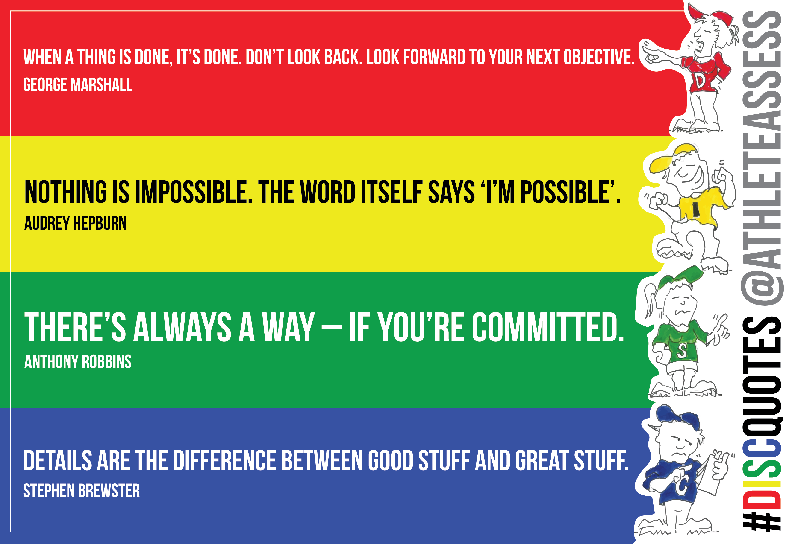

|
Introduction |
Participation |
Benefits |
| DISC is a pop-psych personality system based around four personality types. The DISC system is mostly used with an employment or team building focus. The roots of DISC was a book published in 1928, titled Emotions of Normal People. In it, William Marston theorized that a person would express their emotions in one of four ways, from which come the four letters D I S C. He did not intend to make an assessment, though, and modern DISC does not have all that much in common with Marston's work. In the 1950s a series of industrial psychologists separately used his theory as the basis of a tool for employee selection and organization. Today there are many tests that exist under the name DISC, marketed by various psychological consulting companies for use by human resources departments, each with their own differences. There has been no work using a DISC model in academic psychology since the first work on DISC in the 1950s. |
This test is provided for educational use only. It should not be used as psychological advice of any kind and comes without any guarantee of accuracy or fitness for any particular purpose. Also, your responses may be recorded and anonymously used for research or otherwise distributed. |
Increase self-knowledge - first step to improved skills
Discover your default responses to conflict and change, what motivates you, what causes you stress and how you deal with it
Learn how to adapt your own communication style to get along better with others
Foster constructive and creative group interactions
Facilitate better teamwork and minimize team conflict
Develop stronger sales skills by identifying and responding to customer styles
Manage more effectively by understanding the priorities and behavior of staff and team members |
|  |
Information |
Procedure |
Usage |
Non-judgemental
Helps individuals recognise & discuss their behavioural differences
Personal assessment & awareness tool to improve work productivity, communication, and teamwork
Identifies the individual's key strengths and development areas, as well as the goals and fears that typically motivate the individual and underly their expectations of others |
The ODAT (Open DISC Assessment Test) was created as a free and open-source tool to match users to a DISC type.
The test has 16 statements of opinion that you must rate on a five point scale of how much you agree with each. It should take most people 4-6 minutes to complete. |
Teamwork
Team-building
Communication
Conflict resolution
Leadership
Motivation
Diversity & cultural difference
Coaching skills for managers |
| Personality Type |
Strengths |
Weaknesses |
|
they want to achieve something
fast-paced
have a big appetite for risk
getting things done |
don't care so much about other people's emotions |
 |
lots of ideas
shares fast pace with the dominant person
enjoy talking and sharing stories
overall, like to have a more positive environment (not all, but most of them)
great at meeting new people, connecting with new people |
not the greatest listeners
not so great at keeping promises / commitment |
|
very consistent
making sure everyone's okay
hears the viewpoint from everyone who's in the room
story of turtle and rabbit race - slow and steady by being consistent
practice over and over again
people-oriented as well like I's, but they listen |
quiter
shyer
don't like change |
|
specialist
knowledge level is usually very deep
very logical people
easiest person people can think of for a perfect job |
little bit shyer
never get to the point due to the many details to consider
little bit cold because they care more on logic, facts, the right way |
| Question | Answer | Question | Answer |
|---|
| I enjoy being part of a loud crowd | Neutral | I just want everyone to be equal | Agree |
| I try to outdo others | Slightly Agree | I am always on the look out for ways to make money | Agree |
| I read the fine print | Agree | My first reaction to an idea is to see its flaws | Slightly Agree |
| I love order and regularity | Agree | I put people under pressure | Disagree |
| I seldom toot my own horn | Disagree | I value cooperation over competition | Agree |
| I make lots of noise | Disagree | I have a strong need for power | Neutral |
| I hesitate to criticize other people's ideas | Slightly Agree | I am emotionally reserved | Slightly Agree |
| I joke around a lot | Slightly Agree | I want strangers to love me | Slightly Agree |
|
The S personality type is characterized by their calm, patient, and supportive nature. People with this personality type are reliable team players who value harmony and stability in their personal and professional lives. They are often seen as emphatic, good listeners, and cooperative, and they thrive in environments that promote collaboration, consistency, and strong interpersonal relationships.
Key characteristics of the S personality type include:
Patience: S-types are patient individuals who can calmly navigate difficult situations and remain composed under pressure. They are often seen as a steadying force within a team or group.
Supportiveness: People with an S personality type are naturally supportive and empathic, making them excellent at providing encouragement and assistance to others in both personal and professional contexts.
Dependability: Individuals with an S personality type are reliable and consistent in their actions and commitments. They are often seen as trustworthy and can be counted on to follow through with their responsibilities.
Cooperation: S-types prioritize collaboration and cooperation in their interactions, often seeking to find common ground and shared solutions to problems. They are team players who value the input and perspective of others.
Stability: People with an S personality type seek stability and consistency in their lives, preferring familiar routines and environments. They may be resistant to change and can become uncomfortable when faced with sudden disruptions or unexpected challenges.
Active Listening: S-types are skilled listeners who can attentively process and understand the concerns and needs of others. They are often sought out for their empathic and non-judgmental approach to communication.
While the S personality type has many strengths, they can also face challenges when it comes to assertiveness and adaptability. They may struggle with expressing their own needs or opinions, particularly in situations where conflict may arise. Additionally, their strong desire for stability and consistency can make it difficult for them to adapt to change or embrace new opportunities.
|
| SECTION 2: FEEDBACK - A 10x OPPORTUNITY |
|---|
| Defining Feedback |
|---|
Feedback: the process of feeding back to people what we see for the benefit of their improvement; Focused, direct, specific, two-way; Invites conversation, dialogue, and discussion and usually some action at the end of it; When it’s constructive and from a trusted source with the intention of doing good, it makes all the difference in the world
Praise: commending someone for good behavior; One-way, not specific
Criticism: critiquing someone’s (perceived) faults or finding error; Not the most inspirational way to go about change
Praise is wonderful. Feedback is better. And criticism is a nonstarter.
|
| Activity: Reflect on Past Feedback |
|---|
Reflect on your own positive and negative feedback experiences.
When feedback is delivered constructively, from a trusted source, and with the best of intentions, employees can change dramatically overnight.
|
| The Benefits of Feedback |
|---|
Ken Blanchard: calls feedback the breakfast of champions and the fastest way to become the best leader we can be
Increases performance, decreases turnover, strengthens morale in organizations, and it really inspires a culture of transparency
94% of people have said that feedback has helped them when it’s presented in a constructive way
72% of people say that the best way that leader can show their influence is by offering this constructive feedback, and noticing what’s going on, and sharing advice when necessary
Teams that have received constructive feedback outperform teams who didn’t, 2:1
Feedback: The Powerful Paradox (by Jack Zenger and Joe Folkman)
|
| The Paradox of Feedback |
|---|
The #1 thing that managers fear the most is the #1 thing that employees are craving: feedback.
Managers across the globe are struggling with feedback, and it happens to be the number one most requested training program.
Perception #1: The feedback will hurt. The reality is you’ll hurt them even more if you don’t feedback what you’re seeing.
Perception #2: They will be unpleasantly surprised. In reality, only 11% of the time, is someone actually surprised by the feedback. Most of the time they’re relieved, and they’re happy to be able to put an action plan together to fix whatever it is that you’ve been brave enough to mention.
Perception #3: They can’t handle the truth. Not only can they handle it, they’re begging for it. So when they took a look at across different generations how much and how comfortable people are with feedback, the boomers were the only ones, and this is a gross generalization, but that said that they’re comfortable getting it once a year. For Gen X, they expect to get feedback once a week. The up and comers the millennials expect to get it on demand and in real time.
Perception #4: They’re getting enough already. In reality, 60% of all employees say they haven’t received any feedback at all in the past six months. And 70% of employees say that their career trajectory, and improvement, performance, and fulfillment would have grown immeasurably if anyone had taken the time to give them feedback.
|
| The Neuroscience of Feedback |
|---|
Our brains have been hardwired since the beginning of time to protect us. It spends over 80% of the day trying to figure out what’s a threat and what’s a reward.
Put ourselves into a rest and digest mindset, and access the reward center of our brain. So the fear center, or the fight or flight, is where we’re tapping into the prefrontal cortex, or where reason or the CEO of the brain lies. And so this is where we can be reasonable, and we can hear things, and receive information that’s coming in, and collaborate.
But when we move into that fight or flight mode, when the brain is telling us we need to be threatened, then everything shuts down to protect us, and we can’t hear what people are saying, we’re extremely defensive or even angry, and there’s no chance to hear feedback or collaborate with anyone.
We need to be in charge of our brain and ask the question, “Is there actually a threat here?”
Welcome your fear, don’t fight it. Take the exact amount that you need for adrenaline.
In addition to managing our fear, we just need to remember out intention. And that alone can ignite the reward center of the brain.
Just by thinking about the fact that we get to help someone, we can quickly reprogram and shift from fear into anticipation.
|
| Activity: Banish Your Feedback Fears |
|---|
Make a list of feedback fears and ask yourself the question, how true are they really?
Is it possible for you to rewrite them as rewards instead of threats?
Embrace the culture of ongoing improvement and feedback.
|
| SECTION 3: SETTING THE STAGE FOR FEEDBACK |
|---|
| Adopting a Feedback Mindset |
|---|
Anais Nin: we do not “see the world as it is, we see it as we are.”
>The most important thing that we can do with regards to feedback is just stay open to it.
There’s really no way for us to improve unless we can see how we’re received and perceived by other people because we’re often stuck in our own subjectivity.
Learning leader: just the idea that we are on this Earth to grow and to learn, and we’re constantly looking at feedback as teeny tiny gifts to help us develop along the way.
There’s so much research that’s being done on neuroscience, that’s really helping us in organizations, around adopting a growth versus a fixed mindset.
Fixed mindset - about doing good; wants to prove to someone else that they can do a good job and they compete with others
Growth mindset - about getting better; it’s about constantly improving; they’re competing with themselves and their own personal best every day
|
| Preparing for a Feedback Conversation |
|---|
First thing is to remember our intentions, which are to do good and not harm.
We want to help this person and offer up some constructive feedback so that they can increase their performance.
Second thing is to identify one to two topic areas, tops. Maybe even just one, so that they can focus on it. When we get into two and three and four, it can get overwhelming for someone, and they also start to wonder.
Third thing is to remember the opposite of the golden rule – “Do unto others as you would have done unto you.” We need to reflect on their style and how we might best deliver feedback in a way that they can receive it.
Fourth, we want to reflect on the relationship itself. You would deliver feedback very differently to a peer than to someone reporting up or delivering feedback down or someone that’s reporting into you. And certainly, you deliver it differently if you don’t know the person that well. If they’ve just come onto your team, then you might need a little bit more ramp up first before you just kind of go into it with the person.
You also definitely want to spend some time thinking about how you can create psychological safety to put the person into rest and digest mode so that they can hear it. Think about the location of your feedback conversation.
Deliver feedback in private
|
| Activity: Your Feedback Plan and Checklist |
|---|
| Think about someone who would benefit from constructive feedback, and the plan that you might put together based on the suggestions that you’ve heard in this course that might help that and any other considerations that you think are valid. |
| SECTION 4: HOW TO GIVE FEEDBACK EFFECTIVELY |
|---|
| The 4-Step Performance Feedback Process |
|---|
In the feedback process, it’s important to remember that the person receiving the feedback is the one who’s in control, not the giver. If they don’t hear it and they can’t internalize it, nothing’s happened.
In this four-step feedback process, we give the control to the receiver in the first step and in the fourth. When you do that upfront and at the end you’re getting their buy-in and they’re open.
Step #1: Ask if you can give some feedback. State intention - getting that yes creates the openness
Step #2: Describe specific observed behavior or outcome. Be specific and clear – use factual information and “I” language.
Step #3: Communicate impact around a shared goal. To you, the team, targets, co-workers.
Step #4: Ask for their feedback. What are your thoughts on this? Was that helpful?
Conversations should take no more than two minutes
|
| The Language of Feedback |
|---|
In order to generate a reward instead of a threat response in the person that we’re giving the feedback to, it’s important to think about how we might change up our language.
Instead of correcting errors, it’s really about skill building and attaching the growth and development onto skills that the person already has.
Some of the toxic words that we don’t want to use that will have this effect are things like “don’t, won’t, can’t, shouldn’t, you need to, here’s what I would do.” Those are all non-starters, and the person will be defensive and close up and move into that fight or flight right away.
|
| Past, Present, and Future Approach |
|---|
Focusing on people’s shortcomings doesn’t enable learning, it impairs it.
Past, Present, and Future Approach – a tool used in coaching approach to leadership so that you’ve given the feedback conversation, you stay in the conversation and start to explore some possibilities and a plan for how the improvement can happen, building off of the skills that the person already has.
Looking at the present: “What are three things that are working for you now?” – just by asking that question the person is starting to think about the things they do well, and the reward center shoots off in the brain and they’re open.
“It’s enough about me. What do you think of me?” – suddenly they’re thinking about all the things that they do well, and they’re open to building on those skills that they already have.
Looking back at the past: “What skills have you used in the past when you’ve faced a circumstance like this or worked on feedback like this? And how could you use those qualities to improve the thing that we just talked about now?”
“In the future, what do you already know that you need to do?” – it’s giving the person credit. It’s not jumping right into advice and it’s letting the person generate their own solutions so that they can take ownership of the plan to improve their performance immediately. Since they’re generating the ideas they’re that much more open to it and they’re primed to start acting on it immediately.
“How can I help?” – it shows the person that you’re in the game and you’re willing to stay by their side to work on the improvements together.
The number one skill in terms of leadership effectiveness is empathy. It lets the person know that you’re their partner in crime in driving their growth, development, and fulfillment.
|
| Six Common Feedback Errors |
|---|
Leniency: being too soft, not actually having the courage to give the feedback in the right way that the person needs to hear
Feedback Sandwich: where we say something nice then we say what we really needed to say and then we say something nice again, and oftentimes the real message gets lost
Jumping the Gun: giving feedback when you haven’t even witnesses the circumstance and we have to make sure that we’re giving feedback that we observed, otherwise we just can’t give it
The Trap: where we ask someone what they thought before we share our own point of view and the person literally feels trapped
Feedback Dump: instead of having one focus area, we’ve collected a while bunch that now that we’ve got the courage, we’re just going to dump on the person all at one time. The person is going to be overwhelmed and maybe not trust you anymore because they wonder why you’ve been holding onto this
Halo/Horns Effect: where someone’s strengths overshadow the thing that might be in the way. A lot of times in an organization, a company will keep their top sales performer even if that person is making everyone else’s life miserable
Swoop and Poop: where we may have the courage to give the feedback, but we aren’t going to stick around for the plan. We just go by and we say, “Hey you need to up your game”, and off we go. We don’t stay to help the person actually develop and improve
It’s not so important that you remember that there’s seven of them or even what they are. Its that you’re aware now that as you’re going through the four step performance review process, and doing that skill building with your employees, just to notice when some of these come up and shift your game and respond accordingly
|
| SECTION 5: HOW TO RECEIVE FEEDBACK EFFECTIVELY |
|---|
| Receiving Constructive Feedback |
|---|
It can be hard to receive feedback and sometimes move us into denial or anger. In fact, sometimes being on the receiving end of feedback can feel a little bit like moving through the five stages of death:
1st – Denial: “Not me, you couldn’t possibly be talking about me.”
2nd – Anger: “Who are you to give me that feedback? And by the way, buddy, you’ve got some things you could work on yourself.”
3rd – Bargaining: “Well, yeah, I may not do that well, but there’s all these other things that I’m really good at.”
4th – Depression: “Oh God, everybody hates me. I should just quit.”
5th – Acceptance: “Hey, these people have got my back. Now I get to improve and be the leader I always wanted to be anyway.”
The opportunity and the invitation for us is to see if we can move through these five stages more quickly. And that comes about from our confidence and our desire to be a learning leader and to always improve, and really, if the person who’s giving us the feedback has set the psychological safety, we’re all probably going to move through these five stages.
But when all those other positive factors happen, we can get to acceptance that much more quickly and start moving into improvement.
How do we move through these five stages quicker to get to acceptance?
1) Remember our intention , which is to improve and to be a learning leader with a growth mindset.
2) Slow down our reaction. We all want to be loved just as we are, but actually we want to grow. It helps us move into that rest and digest mode where we can start to hear and be open to the feedback that we’re being given.
3) Listen for understanding. If it isn’t clear, you can always ask questions, but try and hear what that person is really saying to you.
4) Say thank you regardless of how you’re feeling. Research has shown that the person delivering the feedback is more anxious than you are. And they’ve probably put a lot of thought into it, and they’ve brought you what they probably see as a gift. So say thank you even if you’re still processing the feedback.
5) Take a pause. Ask to revisit the conversation at another time.
|
| Receiving Positive Feedback |
|---|
63% of the employees say that they receive more positive feedback than constructive, and they tend to see this positive feedback as fluff, not very helpful and something that the weak prefer.
11x more likely to say that they preferred constructive or corrective feedback instead of positive feedback.
The positive feedback is often not given with the specificity that corrective or constructive feedback is.
If you don’t have that specificity, then ask for it.
Say thank you whether you’re receiving constructive feedback or positive feedback.
|
| Feedback Troubleshooting |
|---|
As we went through those five stages of death, emotions are going to come up when you’re receiving the feedback, and that’s perfectly normal.
The first piece of troubleshooting is if you feel that the feedback is unclear.
Ask some clarifying questions, ask for more examples so that you’ve got that specificity.
You might want to repeat back what you’ve heard to make sure that you’ve heard it clearly.
93% of all conflict is actually due to miscommunication. So make sure that you understood the feedback in the way that it was intended.
The second one is, if you’re feeling that defensiveness and that the feedback was unfair.
Don’t just take you lumps. You can also ask some questions about it, or say that you have some feelings, or gently give some examples that you might think might disprove what the person has said.
You’re not trying to say that they’re wrong. You really still here are seeking to understand, but you want to make sure that you can share with the person, “I’m not sure I see it the same way.”
The third potential troubleshooting is that you find yourself getting upset.
Just breathe deeply, and see if there’s an opportunity to put things in perspective.
If you can’t, it’s fine to cut bait and ask to revisit things another time.
It might be helpful to remember that your manager took the time to have this conversation with you because they want you to succeed.
|
| Activity: Your Feedback Mantra |
|---|
Mindset is everything.
Think about what your feedback mantra could be before you’re about to enter into a feedback conversation.
Create a feedback mantra to inspire you before future feedback conversations.
|
| Activity: Turning Feedback into Action |
|---|
AIM SMART Plan: an effective tool that we can use to turn our feedback intentions into action
1) Establish what’s Acceptable, or the minimum that you could do.
2) Identify the I (ideal). What is the maximum that you could do around feedback?
3) Identify the M (middle). What’s realistic in terms of your goals?
4) Is the goal Specific? For example, now that I have all these great tools, I’m going to practice giving feedback to someone once a week.
5) Is it Measurable? You can measure whether or not you gave it once a week, and you can even have someone else as your accountability partner if that’s helpful to you.
6) Is it Achievable? What, if anything, is in the way of you reaching this goal?
7) Is it Realistic? So, are you energized by this goal? If you’re not, it may be because you’ve take on something bigger than what you’re ready for. So make sure that it’s something that you can succeed at, so that you start to be excited about doing it again and again.
8) Is it Time-oriented? Did you give yourself a specific deadline for practicing feedback? And so if you said once a week, it’s specific and you know exactly what it is that you intend to do.
|
| SECTION 6: CREATING A CULTURE OF FEEDBACK IN YOUR ORGANIZATION |
|---|
| Culture of Feedback: What it Takes |
|---|
Embracing a culture of feedback means going beyond annual performance reviews into having continuous conversations.
Neuroscience Leadership Institute calls this a culture of continuous improvement / continuous performance management (CPM)
The first thing that you can do is to shift the way you’re having meetings.
Instead of having the focus be on project updates, maybe it can be on performance and having feedback conversations and ongoing discussion about how people are doing.
Routinize this by having weekly performance conversations. We also want to make sure that we are encouraging people to ask for feedback. And our employees have a responsibility in this as well, so we can’t just wait for it.
If you want to get this feedback and you want, in real time, to know how you’re doing, certainly create the kind of psychological safety for you not just to give it, but to have people ask for it from you.
You want to make sure that you’re recognizing effort and progress, so positive reinforcement. When people are starting to adapt this culture, catch them doing good, catch them doing well.
Use CPM-focused language, so you have this kind of open-mindedness and transparency.
Make sure that mangers are trained in how to give this feedback. And make sure that they’re open to the fact that people can change.
|
| Culture of Feedback: When |
|---|
Give feedback in real time and ongoing. But we also want to make sure that our employees are in a state where they can hear it. So, still pick and choose your time, and make sure that a traumatic event or something else hasn’t just happened for the person.
If something particularly difficult has just transpired, sometimes it’s better to wait to give that feedback 24 hours later when the person’s had a chance to recover from the thing that maybe didn’t go well.
“Puppy peed on the carpet”: a tool used for training dogs; if you’ve ever trained a dog, you want to make sure that the dog understands which behavior is being corrected by closely linking the bad behavior to the correction as closely as possible.
When the dog has an accident, the suggestion was that right away you put its nose into it or let it know that wasn’t the behavior that you wish to see from the dog.
Feedback should typically be as close to the event as possible, if you believe the person can receive it and it’s the right time. But there’s this area of our brain where excuses lie, and where fear resides, and a lot of times we get stuck there.
Mel Robbins’ “The Five Second Rule”: when you don’t feel like doing something, or you’re procrastinating you count backwards. 5, 4, 3, 2, 1, go. She has helped people move out of addiction. She has helped people move into action.
|
| Culture of Feedback: Who |
|---|
False: “Feedback is meant to be given by managers to their direct reports only?”
We are meant to be giving feedback up, down, and sideways – to our direct reports, our supervisors, and to our peers.
Feedback is a two-way street but, unfortunately, the more senior we get, the more the feedback loop gets broken and people are reticent to share what they’re seeing and observing.
There’s a way to even give feedback to the people that we’re reporting into.
Four Tips for Delivering Feedback Upward
1) The relationship comes first. Without trust, the feedback will be impossible to receive.
2) Intentions must be good. Your desire to help your boss should supersede any issues you may have.
3) Focus on your perspective. What you are seeing or hearing, not what you would do as the boss.
4) Ask first. “Would it be helpful to you for me to share feedback at certain points in this project?”; “I’m likely to have a unique perspective on what we’re doing, would it be ok if I share some of my insight into how the project is going?" - When they say yes, then the openness is created to have the collaboration and have a meaningful dialogue and exchange back and forth with your supervisor.
Find a peer to be your feedback buddy. Use that person back and forth to say, how am I doing? Or even to have someone that you can practice these feedback conversations with. It’s a great opportunity to see how you’re doing in a way where you had that immediate psychological safety because the person is not reporting into you and nor is it your boss.
|
| Activity: Find a Feedback Buddy |
|---|
You have an opportunity to find a feedback buddy. This is a peer and a person that you trust.
This is someone that you have immediate psychological safety with, and someone that you know has the best of intentions for you, but upon whom your success or failure at work does not depend.
You want this to be someone that you’re willing to reciprocate, and offer them your feedback as well.
Think about who that person might be, and make yourself a promise and an intention to initiate that conversation as soon as you get back to work.
|
| Why a Culture of Feedback Works: Case Studies |
|---|
Traditional performance management: based on some pretty antiquated ides, top down management annual performance reviews, broken feedback loop which can all stymie a culture of continuous improvement
Hewlett-Packard: they adopted this culture of continuous improvement with great success. Employee engagement increased by 22% and revenue doubled
Microsoft: they shifted their culture from know-it-all’s to learn-it-all’s. In doing so, they revamped their leadership and talent strategy with unprecedented results
Bridgewater Consulting: Ray Dalio, who created a culture of radical transparency. He’s done podcasts and written books about this. What he’s created here is an environment where everyone knows what is going on at all times and how everyone is doing at all times. And the reason that’s helpful is that neuroscience suggests that when we’re running around trying to cover things up or not admit that, that there were errors that we’ve made or wondering how we’re doing versus someone else. And all of our energy is going against that. We are not in our best mindset to do our best work
When we can have radical transparency and know how we’re doing through feedback at all times we can deliver amazing results.
When people aren’t bogged down with how they’re doing and how everyone else is doing they can actually collaborate and they can challenge. So the goal isn’t harmony, it’s robust conversation and making sure people feel comfortable speaking up. When you do that, it protects you against making errors, decisions too quickly having people work as individuals, instead of a collective team.
Creates a more engaged workforce. We know that when employees are more engaged, productivity increases by a full 17%.
|
| Start Building Your Feedback Culture |
|---|
We don’t have to wait for our companies to start to get onboard with this growth mindset and culture of continuous improvement. We can build it from the ground up, and there’s some simple ways that we can do that too.
1) Model the behavior you wish to see. Start asking people for feedback. Let people know that’s what you expect to see, and ask for it from people, even the ones that are reporting into you, and especially those people, encourage them to ask you the same.
2) Get a feedback buddy and start to practice it. Get more comfortable with giving feedback. You can use that person even to practice the conversations that you might have with someone else.
3) Make feedback a habit. Maybe even make it a game, like creating Feedback Fridays, so that there’s a little cue in there for people to keep doing it. So the way that habits are formed is there’s a cue, there’s a routine or a behavior, which is giving that feedback, and then there’s a reward. And once you start to see the positive response that you get from people when you provide that feedback, your brain will start to crave it, and it’ll go on automatic pilot. And you will naturally, and automatically, and habitually be giving feedback anywhere, any place, and to anyone in your organization.
4) Create psychological safety everywhere. The best leaders make their people feel safe. Reflect on the language that you use, so that it is more growth mindset language.
5) Share good outcomes with the larger team or company. When this goes well, don’t keep it to yourself. Let people know what worked well, and why, so that it starts to spread like wildfire.
|
| Activity: Culture of Feedback Action Plan |
|---|
Identify 1-3 immediate actions you’ll take to start building a culture of feedback
You might also want to use that AIM SMART plan and see not just the thing that you want to start to bring into your culture, but what is your plan to make sure that they happen.
Make a promise to yourself that you’re going to act on them.
|